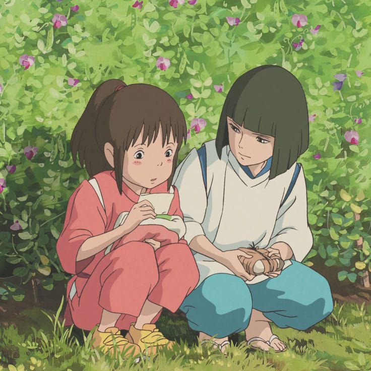

Spiritted Away
Film animasi karya sutradara ternama Jepang Hayao Miyazaki ini bercerita tentang kisah seorang gadis berumur 10 tahun bernama Chihiro dan kedua orangtuanya yang masuk ke sebuah tempat yang terlihat sebagai sebuah taman hiburan yang terabaikan. Setelah kedua orangtuanya berubah menjadi babi raksasa, Chihiro bertemu dengan sosok misterius Haku yang menjelaskan kepadanya bahwa tempat mereka berada adalah sebuah resort di mana makhluk supernatural berisitrahat dari alam duniawi. Untuk dapat membebaskan kedua orangtuanya, Chihiro harus bekerja di sebuah bath house yang dikepalai oleh penyihir bernama Yubaba.
Film ini memenangkan penghargaan Oscar pada tahun 2002 dalam kategori Film Animasi Terbaik dan menjadi anime pertama yang meraih penghargaan dalam kategori tersebut.
